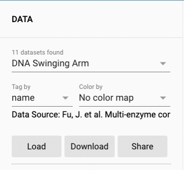
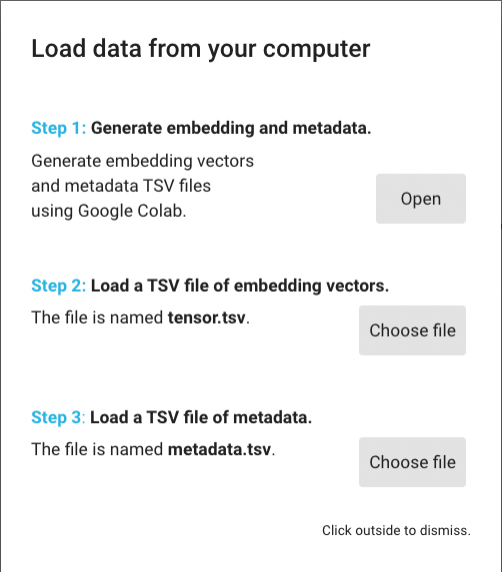
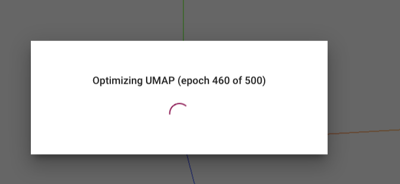
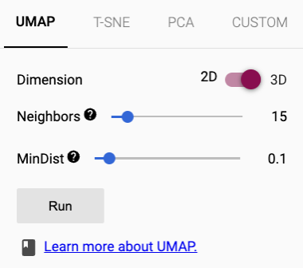

Introduction
The META-SiM Projector is a tool that allows you to visualize and analyze single molecule fluorescence microscopy data in a new way. By projecting embeddings of single molecule time traces onto a 2D plan or 3D space, you can easily identify patterns and trends that would be difficult to see in the raw data.
Prerequisites
Before you begin, you will need the following:
- Single molecule fluorescence microscopy data in the appropriate format, e.g., *.dat, *.traces etc. If you don't have data, you can use the datasets we already imported into the META-SiM Projector for demo purpose.
- A Google account, since we will use Google Colab for running the META-SiM model on your data.
Step 1: Import your data:
This step can be skipped if you use the datasets that we have re-loaded into the projector for demo purpose. To use your own data, follow the steps below:
- Under the "DATA" panel, click on the "Load" button. A guide for data processing and importing will pop up.
- Click on the "Open" button for generating embedding and metadata. A Google Colab will open and walk you through this process. At the end the Google Colab, you will be able to download a "tensor.tsv" file and a "metadata.tsv" file, which contain the generated embeddings and metadata
- Click on the "Choose file" buttons for "Step 2" and "Step 3" and select the "tensor.tsv" file and "metadata.tsv" file that you just downloaded. A progress bar will pop up, indicating that the projector is optimizing the UMAP projection.
Step 2: Choose a projection method:
- The projector offers several different projection methods such as UMAP and PCA.
- Select the projection method that best suits your data.
View the results:
- Once your data has been projected, you will see a 2D or 3D plot of the data in the center of your screen.
- Each point in the plot represents a single molecule time trace.
- The color of each point indicates the value of a particular property. You can select the property for coloring in the "color by" dropdown list under the "DATA" section.